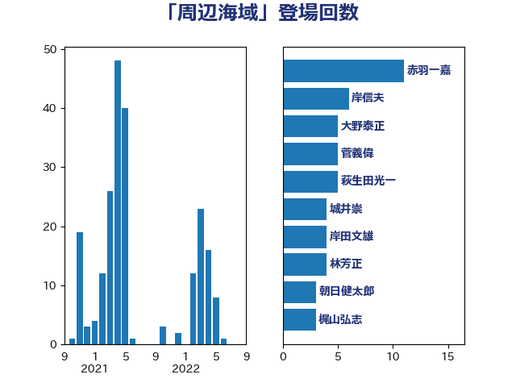

単語「周辺海域」

| 赤羽一嘉 | 公明党 | 11 回 |
| 岸信夫 | 自由民主党 | 6 回 |
| 大野泰正 | 自由民主党 | 5 回 |
| 菅義偉 | 自由民主党 | 5 回 |
| 萩生田光一 | 自由民主党 | 5 回 |
| 城井崇 | 立憲民主党 | 4 回 |
| 岸田文雄 | 自由民主党 | 4 回 |
| 林芳正 | 自由民主党 | 4 回 |
| 朝日健太郎 | 自由民主党 | 3 回 |
| 梶山弘志 | 自由民主党 | 3 回 |
| 井上英孝 | 日本維新の会 | 2 回 |
| 伊波洋一 | 無所属 | 2 回 |
| 坂井学 | 自由民主党 | 2 回 |
| 小宮山泰子 | 立憲民主党 | 2 回 |
| 山口壯 | 自由民主党 | 2 回 |
| 斉藤鉄夫 | 公明党 | 2 回 |
| 浅田均 | 日本維新の会 | 2 回 |
| 浦野靖人 | 日本維新の会 | 2 回 |
| 渡辺猛之 | 自由民主党 | 2 回 |
| 穂坂泰 | 自由民主党 | 2 回 |
| 茂木敏充 | 自由民主党 | 2 回 |
| 赤澤亮正 | 自由民主党 | 2 回 |
| 野上浩太郎 | 自由民主党 | 2 回 |
| 高木啓 | 自由民主党 | 2 回 |
| 世耕弘成 | 自由民主党 | 1 回 |
| 加藤勝信 | 自由民主党 | 1 回 |
| 北村経夫 | 自由民主党 | 1 回 |
| 土屋品子 | 自由民主党 | 1 回 |
| 大西英男 | 自由民主党 | 1 回 |
| 小島敏文 | 自由民主党 | 1 回 |
| 岡田直樹 | 自由民主党 | 1 回 |
| 岩本剛人 | 自由民主党 | 1 回 |
| 平山佐知子 | 無所属 | 1 回 |
| 有村治子 | 自由民主党 | 1 回 |
| 木村次郎 | 自由民主党 | 1 回 |
| 杉田水脈 | 自由民主党 | 1 回 |
| 柳ヶ瀬裕文 | 日本維新の会 | 1 回 |
| 滝波宏文 | 自由民主党 | 1 回 |
| 熊谷裕人 | 立憲民主党 | 1 回 |
| 石井啓一 | 公明党 | 1 回 |
| 石井苗子 | 日本維新の会 | 1 回 |
| 秋葉賢也 | 自由民主党 | 1 回 |
| 竹内真二 | 公明党 | 1 回 |
| 赤嶺政賢 | 日本共産党 | 1 回 |
| 金子恵美 | 立憲民主党 | 1 回 |
| 鈴木敦 | 国民民主党 | 1 回 |
| 青柳仁士 | 日本維新の会 | 1 回 |
| 音喜多駿 | 日本維新の会 | 1 回 |
| 高橋千鶴子 | 日本共産党 | 1 回 |